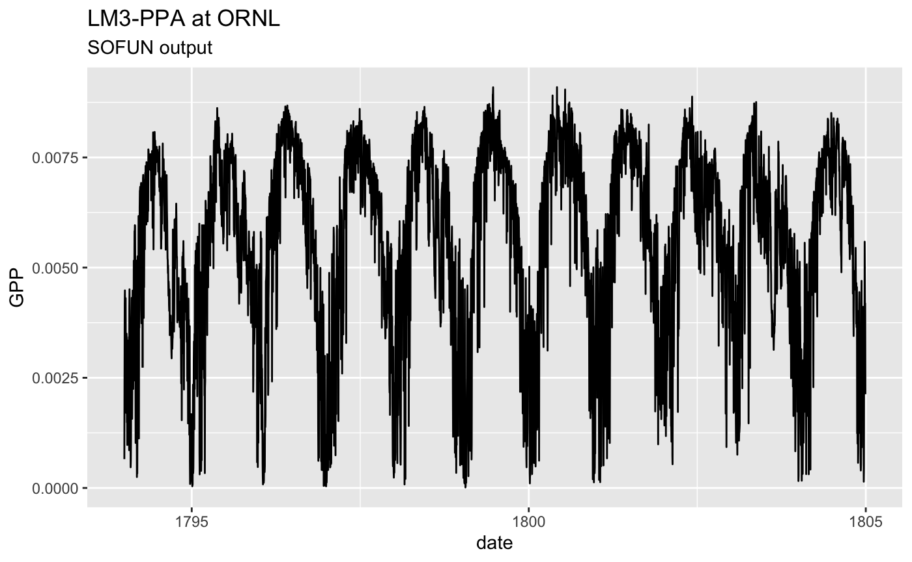

Manually select some sites from which we’re going to use the data for evaluation and calibration.
mysites <- c("ORNL")
Create a site meta info table that contains all the site-specific information that is used to force site-simulations (e.g. starting year, number of simulations years, elevation, etc.). For FLUXNET2015 data, required meta info is provided by the rsofun package (data frame rsofun::metainfo_Tier1_sites_kgclimate_fluxnet2015).
siteinfo <- data.frame(sitename="ORNL", lon = 0.0, lat = 0.0, elv = 0.0)
Now specify the simulation parameters that are identical for all site-scale simulations.
params_siml <- list( spinup = TRUE, spinupyears = 1793, recycle = 11, # 9 or 11 firstyeartrend = 1998, nyeartrend = 11, #9 or 11 outputhourly = FALSE, outputdaily = TRUE, do_U_shaped_mortality = FALSE, update_annualLAImax = FALSE, do_closedN_run = TRUE )
Run prepare_setup_sofun() to define the simulation settings that contain all the information specified by the two steps above (meta info, and simulation parameters).
#settings_sims <- prepare_setup_sofun(siteinfo = siteinfo, params_siml = params_siml)
params_tile <- list( soiltype = 3, FLDCAP = 0.4, WILTPT = 0.05, K1 = 2.0, # turnover rate of fast SOM per year K2 = 0.1, # 0.12 # 0.2, # 0.075 # turnover rate of slow SOM per year K_nitrogen = 0.0, # 1.2 # 2.5 # rate of a year, 2.5 etaN = 0.0, # 0.025 # loss rate with runoff MLmixRatio = 0.6, # 0.8 # fraction of microbes to litter l_fract = 0.0, retransN = 0.0, f_N_add = 0.02, # 0.005, # 0.02 f_initialBSW = 0.005 # alpha_FR = 1.2; gamma_FR = 12.0; dSlowSOM = 2.5 * iSOM + 1.5; rho_N_up0 = 0.1 )
params_species <- tibble( lifeform = c(0, 1, 1, 1, 1, 1, 1, 1, 1, 1, 1), # 0: grass; 1 Woody phenotype = c(0, 1, 1, 1, 1, 1, 1, 1, 1, 1, 0), # 0: Deciduous; 1 Evergreen pt = c(1, 0, 0, 0, 0, 0, 0, 0, 0, 0, 0), # 0: C3; 1: C4 seedlingsize = c(0.02, 0.05, 0.05, 0.05, 0.05, 0.05, 0.05, 0.05, 0.05, 0.05, 0.05), # initial size of seedlings LMA = c(0.035, 0.14, 0.14, 0.14, 0.14, 0.14, 0.14, 0.14, 0.14, 0.14, 0.035),# Leaf mass per unit area phiRL = c(4.0, 1.0, 2.0, 3.0, 4.0, 5.0, 6.0, 7.0, 8.0, 9.0, 3.0), LNbase = c(0.8E-3, 0.8E-3, 0.8E-3, 0.8E-3, 0.8E-3, 0.8E-3, 0.8E-3, 0.8E-3, 0.8E-3, 0.8E-3, 0.8E-3), # kgN m-2 leaf, Vmax = 0.03125*LNbase laimax = c(3.0, 3.5, 3.5, 3.5, 3.5, 3.5, 3.5, 3.5, 3.5, 3.5, 3.8), # maximum crown LAI LAI_light = c(3.0, 3.5, 3.5, 3.5, 3.5, 3.5, 3.5, 3.5, 3.5, 3.5, 3.8), # Light-limited crown LAI Nfixrate0 = c(0.0, 0.0, 0.0, 0.0, 0.0, 0.0, 0.0, 0.0, 0.0, 0.0, 0.0), # 0.03 kgN kgRootC-1 yr-1 NfixCost0 = c(12., 12., 12., 12., 12., 12., 12., 12., 12., 12., 12.), # 12, 24 gC/gN phiCSA = c(1.25E-4, 0.25E-4, 0.25E-4, 0.25E-4, 0.25E-4,0.25E-4, 0.25E-4, 0.25E-4,0.25E-4, 0.25E-4, 0.25E-4), mortrate_d_c = c(0.02, 0.02, 0.02, 0.02, 0.02, 0.02, 0.02, 0.02, 0.02, 0.02, 0.02), # canopy tree mortality rate, year-1 mortrate_d_u = c(0.2, 0.08, 0.08, 0.08, 0.08, 0.08, 0.08, 0.08, 0.08, 0.08, 0.08), # understory tree mortality rate, year-1 maturalage = c(0.5, 5, 5, 5, 5, 5, 5, 5, 5, 5, 5), fNSNmax = c(5, 5, 5, 5, 5, 5, 5, 5, 5, 5, 5) ) %>% bind_rows(., slice(., 1:5))
By layers.
# adopted from datatypes.mod.f90 l.538 params_soil <- tibble( type = c("Coarse", "Medium", "Fine", "CM", "CF", "MF", "CMF", "Peat", "MCM"), GMD = c(0.7, 0.4, 0.3, 0.1, 0.1, 0.07, 0.007, 0.3, 0.3), GSD = c(5.0, 5.3, 7.4, 6.1, 6.1, 14.0, 15.0, 7.4, 7.4), vwc_sat = c(0.380, 0.445, 0.448, 0.412, 0.414, 0.446, 0.424, 0.445, 0.445), chb = c( 3.5, 6.4, 11.0, 4.8, 6.3, 8.4, 6.3, 6.4, 6.4), psi_sat_ref = c(-600., -790., -910., -1580., -1680., -1880., -5980., -790., -790.), # Pa k_sat_ref = c(130.8, 75.1, 53.2, 12.1, 11.1, 12.7, 1.69, 53.2, 53.2), # mol/(s MPa m) alphaSoil = rep(1.0, 9), heat_capacity_dry = c(1.2e6, 1.1e6, 1.1e6, 1.1e6, 1.1e6, 1.1e6, 1.1e6, 1.4e6, 1.0) )
init_cohort <- tibble( init_cohort_species = c(1, 2, 3, 4, 5, 6, 7, 8, 9, 10), init_cohort_nindivs = c(0.02, 0.02, 0.02, 0.02, 0.02, 0.02, 0.02, 0.02, 0.02, 0.02), init_cohort_bsw = c(0.2, 0.2, 0.2, 0.2, 0.2, 0.2, 0.2, 0.2, 0.2, 0.2), init_cohort_bHW = c(0.0, 0.0, 0.0, 0.0, 0.0, 0.0, 0.0, 0.0, 0.0, 0.0), init_cohort_nsc = c(0.5, 0.5, 0.5, 0.5, 0.5, 0.5, 0.5, 0.5, 0.5, 0.5) )
# high N input --> Deciduous # low N input --> Evergreen init_soil <- list( init_fast_soil_C = 0.15, # kg C m-2 # C/N = 15, 0.75 kg SOM ~ 50 gN init_slow_soil_C = 16.0, # kg C m-2 # C/N = 40 init_Nmineral = 2.5E-3, # kg N m-2 N_input = 0.0E-3 # 2.4E-3, # kg N m-2 yr-1, N deposit: 0.8 g N m-2 yr-1 )
For now, this is implemented as an illustration. Should be made site-specific.
df_soiltexture <- bind_rows( top = tibble(layer = "top", fsand = 0.4, fclay = 0.3, forg = 0.1, fgravel = 0.1), bottom = tibble(layer = "bottom", fsand = 0.4, fclay = 0.3, forg = 0.1, fgravel = 0.1) )
Get the input from the nice weird looking file with half-hourly data.
The file has the following variables (units):
Year DOY Hour T_air Q_air Wind_speed Precip Pressure R_global_in R_longwave_in CO2 K kg/kg m/s kg_H2O/m2/s pa W/m2 W/m2 ppm
forcing <- read_delim( paste0(path.package("rsofun"), "/extdata/ORNL_forcing.txt"), col_names = TRUE, delim = "\t") %>% mutate(date = lubridate::ymd_hm( paste0( as.character(YEAR), "-01-01 00:00" ) ) + days(DOY-1) + hours(HOUR) ) %>% mutate(sitename = "ORNL") %>% dplyr::filter(!(mday(date)==29 & month(date)==2)) %>% dplyr::select(-date, -sitename)
## Parsed with column specification:
## cols(
## YEAR = col_double(),
## DOY = col_double(),
## HOUR = col_double(),
## PAR = col_double(),
## Swdown = col_double(),
## TEMP = col_double(),
## SoilT = col_double(),
## RH = col_double(),
## RAIN = col_double(),
## WIND = col_double(),
## PRESSURE = col_double(),
## aCO2_AW = col_double(),
## amb_co2 = col_double()
## )#forcing <- subset(forcing, YEAR<=2006) #ORNL_forcing.txt #US-WCrforcing.txt complete <- rep(seq(ymd("1998-01-01"), ymd("2008-12-31"), by = "days"), each = 24) ddf_complete <- tibble(date = complete) # forcing <- read_delim("~/BiomeE-Allocation/model/input/US-WCrforcing_clean.txt", col_names = TRUE, delim = "\t")
Run the model for all the sites specified in the first step.
# siteinfo <- list(lon = 99, lat = 99, elv = 99) out <- run_lm3ppa_f_bysite( "ORNL", params_siml, siteinfo, forcing, # ddf_input params_tile, params_species, params_soil, init_cohort, init_soil, makecheck = TRUE)
## Warning: The `x` argument of `as_tibble.matrix()` must have column names if `.name_repair` is omitted as of tibble 2.0.0.
## Using compatibility `.name_repair`.
## This warning is displayed once every 8 hours.
## Call `lifecycle::last_warnings()` to see where this warning was generated.rsofun_out_hourly_tile <- out$output_hourly_tile rsofun_out_daily_tile <- out$output_daily_tile rsofun_out_daily_cohorts <- out$output_daily_cohorts rsofun_out_annual_tile <- out$output_annual_tile rsofun_out_annual_cohorts <- out$output_annual_cohorts # moddf_drivers <- collect_drivers_sofun( # settings = settings_sims, # forcing = ddf_input # ) # # ## run for a single site # mod <- run_lm3ppa_f_bysite( # df_drivers$sitename[1], # df_drivers$params_siml[[1]], # df_drivers$siteinfo[[1]], # df_drivers$forcing[[1]], # df_drivers$df_soiltexture[[1]], # params_modl = params_modl, # makecheck = TRUE, # method = "lm3ppa" # ) # ## Run for the full set of sites # ptm <- proc.time() # df_output <- runread_sofun_f( # df_drivers, # params_modl = params_modl, # makecheck = TRUE, # parallel = FALSE, # method = "lm3ppa" # ) # print(ptm) # microbenchmark::microbenchmark( # runread_sofun_f( # df_drivers, # params_modl = params_modl, # makecheck = TRUE, # parallel = TRUE, # ncores = 4 # ), # runread_sofun_f( # df_drivers, # params_modl = params_modl, # makecheck = TRUE, # parallel = FALSE # ), # times = 5, # units = 's' # ) rsofun_out_daily_tile %>% mutate(date = lubridate::ymd(paste0(year, "-01-01")) + lubridate::days(doy-1)) %>% ggplot(aes(x=date, y=GPP)) + geom_line() + labs(title = "LM3-PPA at ORNL", subtitle = "SOFUN output")
